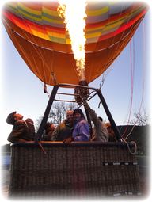
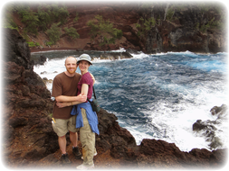
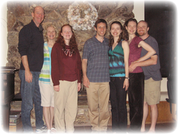
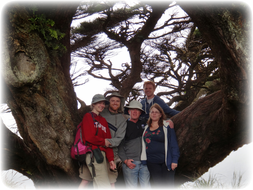
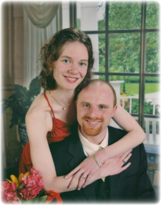

Hot Air Ballooning in Napa
It has been another busy, but wonderful year for Brianna and Steve. Work has dominated their time (especially recently): after a summer of data analysis and writing, Brianna is now on the economics job market, while Steve and his team at Google have been working hard to launch a brand new version of his datacenter monitoring tools. Despite the work (and sometimes because of it), Brie and Steve took some fantastic vacations. The year began with a weekend trip to Napa to celebrate their first anniversary. They visited the geyser (“Old Faithful of California”) and the petrified forest tourist traps, hiked and window shopped, toured the Robert Mondavi Vineyard, and took a hot air balloon ride. Truly a wonderful trip. 
Red Sand Beach in Hana
In April, they traveled to Hawaii where Brie was presenting at a conference. They enjoyed the Road to Hana, red and black sand beaches, multiple gorgeous hikes at Haleakala National Park, and several sea turtle sightings (both above and below the water). They also made it to Pasadena for the Rose Parade, took several ski trips to Lake Tahoe, and BRIEfly visited Niagara Falls.

Cardiff Family Conference
Hicks Family Road Trip
Brie and Steve also enjoyed some fabulous times with family. They participated in the Second Cardiff Family Conference held this year at the beach in Ventura, CA. The long weekend was full of sea kayaking, surfing, lip syncing, short stories, games, and yummy cooking. In July they traveled up the scenic Northern California coast for the Hicks Family Road Trip. They saw the lighthouse at Point Reyes, the beautiful coastlines around Bodega Bay, redwood forests, Ghirardelli Square, and the Bay Bridge Lights. Additional time with family included Steve's cousin's wedding in Tampa (with a visit to Busch Gardens and the Dali museum on the side) and a quick trip to Virginia with tours of Washington National Cathedral, several monuments, and Arlington National Cemetery. Briezilla Devours Giant Hershey Kiss in Niagara
Steve and Brie both finished their terms in leadership with InterVarsity Graduate Christian Fellowship, but still enjoyed such gatherings as a delicious Thanksgiving meal with IV Grad friends. They still attend Grace Presbyterian Church and have begun to get more involved in the life of the church. Steve has cultivated quite the backyard garden with a variety of herbs and, for the first time, chili peppers and tomatoes. This has enabled Steve to turn up the heat on more dishes, keeping Brianna well fed but occasionally panting. Brianna and Steve wish you blessings, both now and in the coming year! 
|